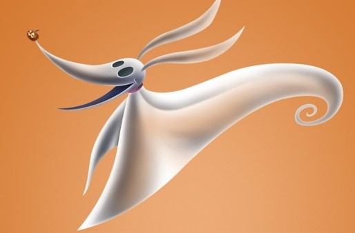

Zero is Jack Skellington's loyal, ghostly dog in Tim Burton's The
Nightmare before Christmas. He primarily serves as a faithful
companion following Jack through his adventures, especially when he
becomes obsessed with Christmas and attempts to take over the holiday.
Zero shows concern for Jack's well-being and even tries to guide him
back to Halloween Town when they are lost in Christmas Town by actions
like like fetching a picture showing Jack in his usual Halloween role.
Zero is a transparent, ghostly dog with a glowing pumpkin nose, which
parallels Rudolph's red nose. Zero is a constant, loyal presence by
Jack's side, providing companionship and occasionally acting as a
voice of reason when Jack becomes too consumed with Christmas.